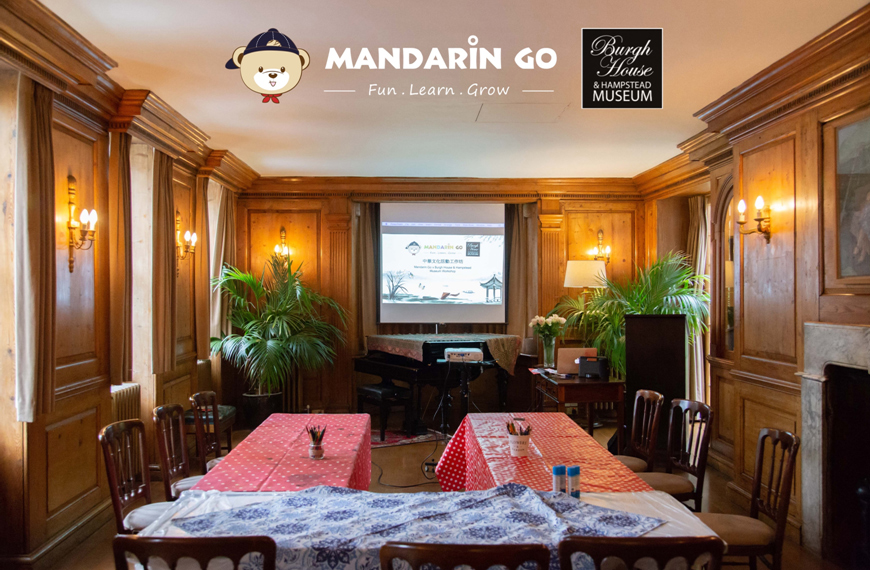
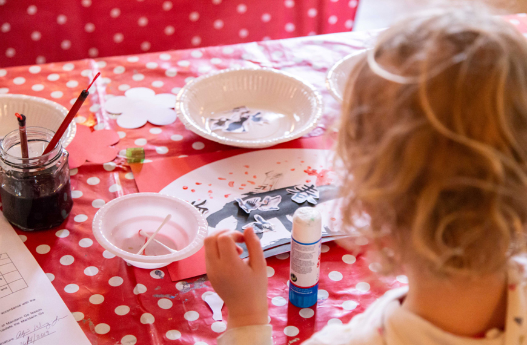
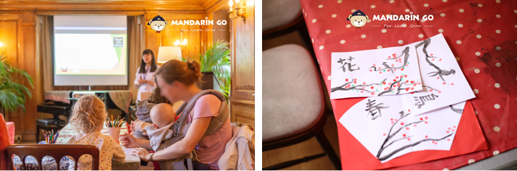

On the 26th of April 2019, Mandarin Go Ltd. held its first Chinese language and cultural workshop in collaboration with Burgh House. This event was themed “Spring" to welcome the season to London and involved activities such as Chinese ink painting and singing. The event filled Burgh House’s beautiful, historic hall with children’s laughter and created an immersive learning atmosphere.

The workshop was the first of a series, and was the result of three month of work between Mandarin Go Ltd. and Burgh House. Our team on the day comprised on three experienced teachers and one photographer, all working with the goal of integrating Chinese culture, Chinese characters, art, and creativity into the workshop.
Children present learned some interesting Chinese characters such as spring (春), bird (鳥), flower (花) through songs, arts and crafts. They also enjoyed drawing their own Chinese ink paintings through Chinese calligraphy. This meaningful memory was captured on their unique artworks.


“Teachers are friendly and professional, we enjoyed the play, songs, art, and crafts to learn Mandarin”, “The event is great, and we hope that there is more event like this in the future”, were some of the feedback we received from the parents! We’re very grateful to have this opportunity to interact with the children and their parents, and we would like to thank the team at Burgh House & Hampstead Museum for the opportunity received.